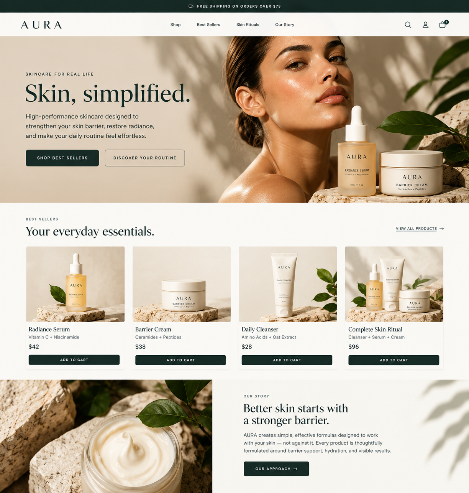
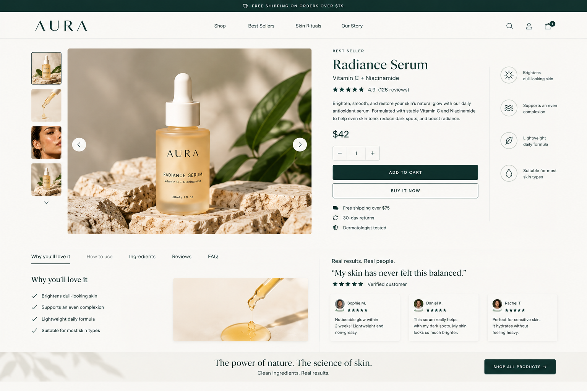
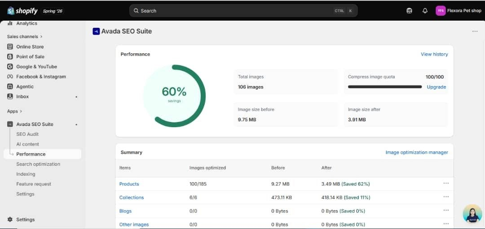
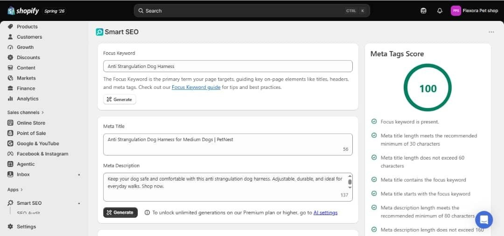

02 · Skincare DTC · Shopify UX/UI + SEO
AURA — a calmer path from discovery to purchase.

Homepage UX
The homepage leads with a concise value proposition, two clear CTAs, best-seller merchandising and a brand-story section. Product cards make price and action visible without overwhelming the page.
Product page UX
The product experience uses a strong gallery, concise benefit messaging, social proof, quantity controls and clear Add to Cart / Buy Now actions. Supporting content answers common purchase questions below the fold.

SEO & performance
The optimization work included structured metadata and image optimization. The provided optimization screenshots show image-size reduction from 9.75 MB to 3.91 MB and a 100/100 meta-tag score for the showcased product setup.

